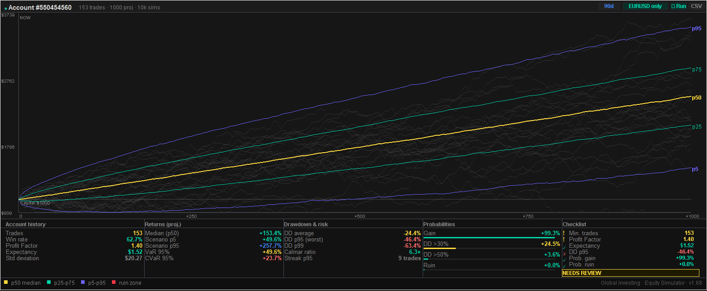

Monte Carlo Equity Projection for MetaTrader 5
How the Monte Carlo Equity Projection indicator turns an account's own closed-trade history into a percentile cone of future equity outcomes, how to read the risk metrics strip and checklist verdict underneath it, and how to install it on a MetaTrader 5 chart.
What It Is
Monte Carlo Equity Projection is a standalone MetaTrader 5 indicator (MQL5 Market product #186259) that reads an account's real closed deals via the native MT5 API and runs a bootstrap Monte Carlo simulation on them, drawing a percentile cone of projected equity paths directly on the chart. It answers a narrower, more concrete question than a macro dashboard: given the trading statistics an account has actually produced so far, what is the realistic range of outcomes ahead — and do those statistics currently support scaling up?
How the Simulation Works
The indicator draws from the account's closed deals with replacement — bootstrap resampling — rather than assuming any fixed return distribution (normal, log-normal, or otherwise). Each simulated path resamples the account's own trade-by-trade results in a new random order, so the projection reflects the actual shape of the account's win/loss distribution, including its skew and tail behaviour, instead of a theoretical bell curve.
By default the indicator runs 10,000 simulations projecting 500 forward trades each, both configurable. Across all simulated paths, it computes the p5, p25, p50, p75, and p95 percentile equity value at each trade step, plotting these five percentile curves as a cone over the live equity curve. A set of faint background paths — a sample of individual raw simulation runs — sits behind the cone to give a visual sense of path dispersion beyond the five summary percentiles.
WebRequest call, and no internet permission required to run it — unlike the Global Investing terminal products, which pull live macro data from outside MT5.
Reading the Equity Cone
The cone widens as the projection extends further from "NOW" — more simulated trades means more accumulated variance across paths, so the gap between the p5 (worst-case band) and p95 (best-case band) curves grows the further right you read the chart. The p50 (median) curve is the single most likely path through the middle of the distribution, not an average, and is not more probable than any other point inside the p25–p75 band.

Risk Metrics Strip
A full statistics panel sits below the cone, split into four groups:
| Group | Metrics |
|---|---|
| Account history | Trades, win rate, profit factor, expectancy, standard deviation |
| Returns (projected) | Median (p50), scenario p5 / p95, VaR 95%, CVaR 95% |
| Drawdown & risk | Average drawdown, DD p95 / p99, Calmar ratio, worst losing streak at p95 |
| Probabilities | Probability of gain, probability of DD >30%, probability of DD >50%, probability of ruin |
Probability of ruin is the share of simulated paths in which account balance falls below 20% of starting capital at any point during the projection — a fixed reference threshold, not a per-account setting.
Checklist Verdict
A configurable checklist — minimum trade count, minimum profit factor, maximum tolerable p95 drawdown, maximum ruin probability, and minimum probability of gain — rolls the full statistics panel into a single verdict: tradeable, caution, needs review, or not tradeable. It is a one-glance read on whether the account's current statistics clear the bar the checklist defines, not an assessment of the strategy itself.
Configurable Inputs & CSV Export
- History filter — days of history to include (0 = all available), with an option to restrict to the current chart's symbol only.
- Simulation — number of bootstrap simulations, number of trades to project, reference capital used for percent calculations, and a random seed for reproducible runs.
- Risk thresholds — the five checklist inputs described above.
- Panel — full color customization for accents, background, border, dividers, and text.
- CSV export — one-click export of results to the shared MT5
Common\Filesfolder (File → Open Data Folder, one level up from the terminal-specific folder), namedESI_<symbol>_<date>.csv.
Installing on MetaTrader 5
Download Monte Carlo Equity Projection from MQL5 Market, then drag it from the Navigator panel onto any MT5 chart. Because it reads only the account's own closed-deal history through the native MT5 API, no WebRequest whitelist entry or additional permission is required to see the default cone and risk metrics strip.
Further Reading
For the full calculation methodology across every terminal panel — z-score normalisation, OIS-implied probability mechanics, and documented limitations — see the published methodology document: